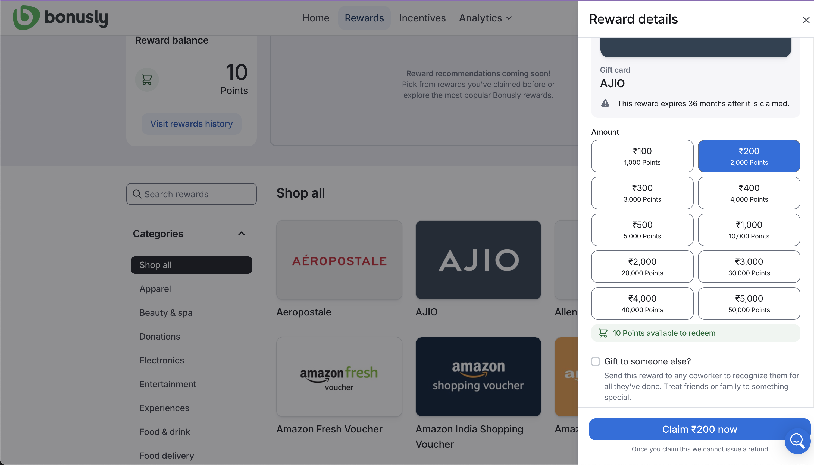
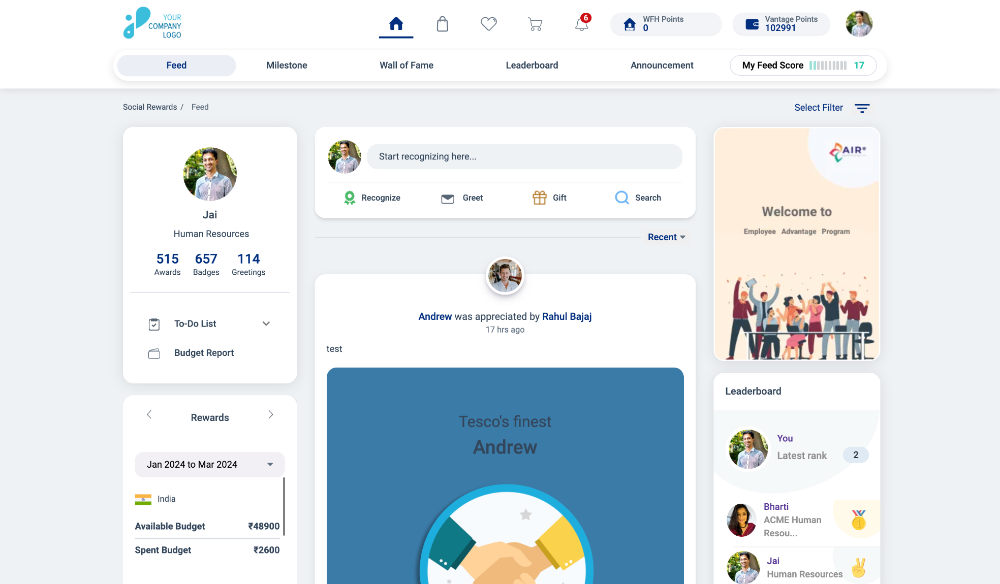
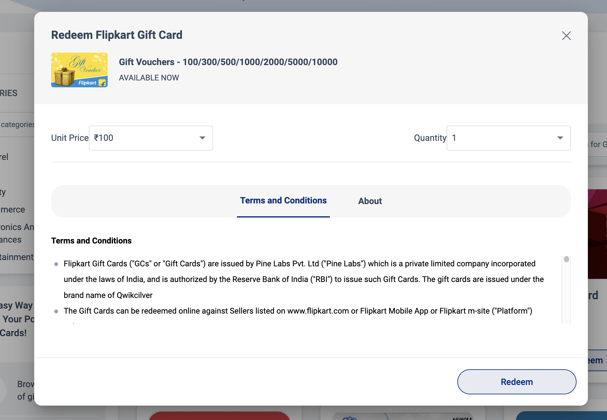
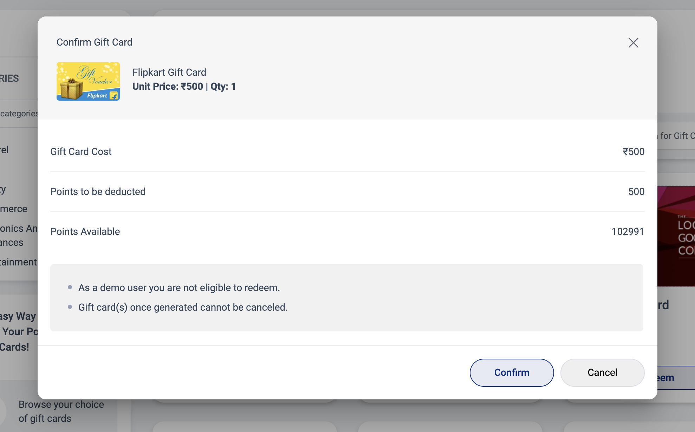
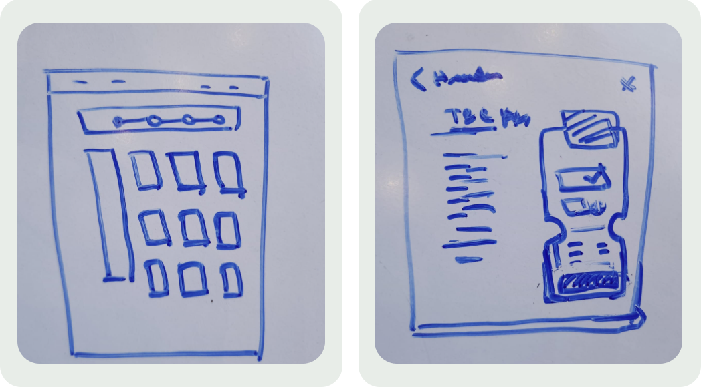

The busiest journey on the platform - and the least examined.
A year of platform data made the case for looking here first:
Nearly half a billion points flowed through screens that had never been usability-tested. Analytics also showed frequent drop-offs before redemption was completed - people were arriving with points to spend and leaving without spending them.
Eight interviews, twenty surveys, three competitors.
I interviewed 8 active users and surveyed 20 more, walking them through the live flow from "I want to spend my points" to "I have my gift card." Three findings kept repeating:
- People couldn't find the redemption section - the entry point simply wasn't where they expected it to be.
- The points-to-value conversion was confusing - nobody was sure what their points were actually worth.
- No clear confirmation - after redeeming, users weren't certain it had worked, so they double-checked their email and balance "just in case."
"It's hard to tell if my points will cover the gift card I want." - Sarah, 32, frequent redeemer
That quote became the persona for the whole project: someone who redeems often, wants to do it quickly and confidently, and is repeatedly made to do mental arithmetic the interface should be doing for her.
I also analysed three comparable rewards platforms. The pattern-match was clear - the best of them lead with clear categorisation, put value selection before terms, and give real-time confirmation the moment a reward is claimed:

Competitor teardown: Bonusly's reward panel leads with denominations mapped to points and a "points available to redeem" line - the exact transparency our users were asking for.
Four places the flow lost people.
Combining the interviews with a heuristic walkthrough, the drop-offs traced back to four specific breakdowns - navigation, page hierarchy, modal hierarchy and feedback.
1 · The front door was unmarked. A new user has no obvious way to start redeeming - clicking the wallet icon in the header unexpectedly lands on the gift-card page, while nothing is labelled "redeem." Discovery was an accident, not a path:

Before: the wallet icon silently doubles as the redemption entry. In testing, new users hunted through the nav instead.
The fix - one clearly labelled entry point. Gift Cards became a first-class, named tab in the store navigation, and the header was decluttered so the points balance sits next to the action it feeds.
2 · The catalogue hid below the fold. Half the first screen was spent on the header, a promotional banner and a heading - the actual gift cards, the reason people came, started below the fold:
Before: banner + heading + intro text occupy the prime real estate; the cards you came for need a scroll.
The fix - the banner went, and in its place a slim "Steps to Redeem" strip explains the whole journey in one line (browse → choose value → redeem with points → gift card by email). The catalogue now opens on the first screen, with brand filters alongside categories.
3 · Terms & conditions outranked the price. Inside the redeem dialog, the T&C block dominated while the two decisions that matter - unit price and quantity - were squeezed into a thin row above it:

Before: legal copy gets the stage; the purchase decision gets a footnote.
The fix - the dialog was re-ranked around the decision: card value and quantity first, shown with their points cost; terms tucked into a collapsed section for the people who actually want them.
4 · The maths never explained itself. The confirmation showed the price as a bare calculation of redemption points - numbers without a sentence. Users saw "500" three ways and still asked, "so what's left, and did it work?":

Before: cost, deduction and balance as unlabelled arithmetic - and no positive confirmation once redeemed.
The fix - the confirmation speaks plainly: what you're getting, exactly how many points it costs, and what your balance will be after - followed by an explicit success state and email receipt, so nobody has to wonder whether it worked.
Sketch the flow, test the flow, then draw the pixels.
Ideation centred on three moves: a dedicated, findable way in; a visual points-to-value conversion everywhere a price appears; and a confirmation screen that closes the loop. I sketched the redemption journey as low-fidelity wireframes first and validated the skeleton with users before any UI polish:

Whiteboard lo-fi: the catalogue with the steps strip up top, and the redeem dialog re-ranked around value and quantity.
The follow-up interviews were structured around five checkpoints - first impressions, filter & search, card information & call-to-action, the redemption flow itself, and open suggestions. Small but load-bearing details came out of these sessions: the "Available" tag needed to earn its place, the search had to actually find specific brands, and every card needed its action visible without hovering.
Tested with the same eight users. The numbers moved.
I ran moderated usability tests of the redesigned flow with 8 frequent redeemers, measuring the same tasks as the baseline:
Testing also drove two final iterations: the Redeem button's colour contrast was strengthened after it under-performed against the "Available" tag, and error messages for invalid entries were rewritten to say what went wrong and what to do next.
Everything you need to redeem, on one screen.
The shipped catalogue: slim header, the four-step strip where the banner used to be, brand filters, and every card carrying its own Redeem action - all above the fold.
- One named way in - Gift Cards as a labelled tab, points balance beside it.
- Steps to Redeem strip - the whole journey explained in one glance, replacing a decorative banner.
- Catalogue first - cards, availability and actions on the first screen; categories and brands filterable from the left rail.
- Honest arithmetic - value selection mapped to points, a confirmation that restates cost, deduction and remaining balance, and a real success state.
The full deck behind this study - data, interview scripts and iterations - lives in Figma →